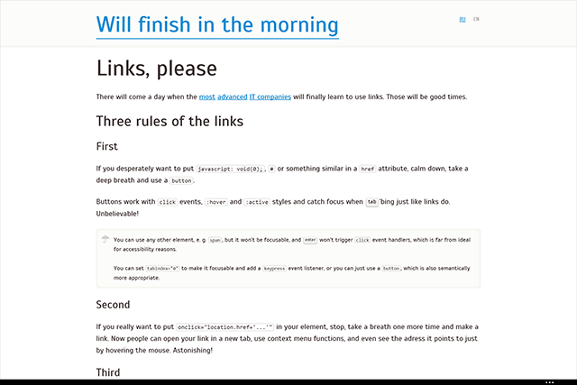

About the @viewport
Once Opera’s guys proposed to use @viewport { ... } in CSS instead of <meta name="viewport" ...> tag. Regarding the
reasons
you’d better watch and listen to @ppk and I will explain why you should use this
right now.
1. Proper viewport for Windows Phones
I’ve noticed long ago that websites on Windows Phone look bulky in landscape mode but never deeply thought about the fact.
You might overlook the difference between iOS and Windows Phone views in portrait mode:
 |  |
|---|---|
Windows Phone 8.1 | iOS 7 |
However in the landscape mode the enourmousness of Windows Phone view becomes clear:


It turned out that Windows Phone considers usual <meta name="viewport" content="width=device-width, initial-scale=1"> as a designation to make a viewport 320 logical pixels wide, no matter what real device resolution is (because iPhone).
Instead, fresh and lush @viewport {width: device-width;} currently being supported by IE10 and IE11 with prefix
overrides this meta’s value; and moreover – instructs a Windows Phone to use its native viewport resolution.
This is how it should work:


The portrait mode also undergoes a change. HTC 8x has better resolution then iPod and same pixel density, so its viewport should be a little bit wider than 320 pixels:
 |  |
|---|---|
Before | After |
@-ms-viewport was buggy in WP 8 before its third update because it operated with real pixels and not with logical
ones. This caused too large viewport size (and so too small website view) in the retinish phones.
Third update came out a while ago, older phones running WP7 are not affected by the bug, so now this bug can be safely ignored.
2. Responsiveness on Windows 8 devices
Besides, as it proved, IE in Windows 8 ignores the meta tag in
metro mode but correctly interprets @-ms-viewport. Here there are a couple of explanatory GIFs:


@-ms-viwport.
In the first case we get a non-adaptive web site. Bad. The second approach gives a mobile version snapped to the edge of the screen. Splendid!
What do we do?
All the real guys are now combining the meta tag:
<head>
...
<meta name="viewport" content="width=device-width, initial-scale=1">
...
</head>with CSS @viewport declaration:
@-ms-viewport {
width: device-width;
}
@viewport {
width: device-width;
}Advantages:
- Responsiveness in IE on Windows 8
- Native viewport in IE on Windows Phones
- Future-proof!
Drawbacks:
- Viewport is broken on Windows Phone without third update
Related links
- CSS Device Adaptation, W3C
- The Mobile Viewports, Peter Paul Koch
- IE10 Snap Mode and Responsive Design, Tim Kadlec
- Windows Phone 8 and Device-Width, Tim Kadlec